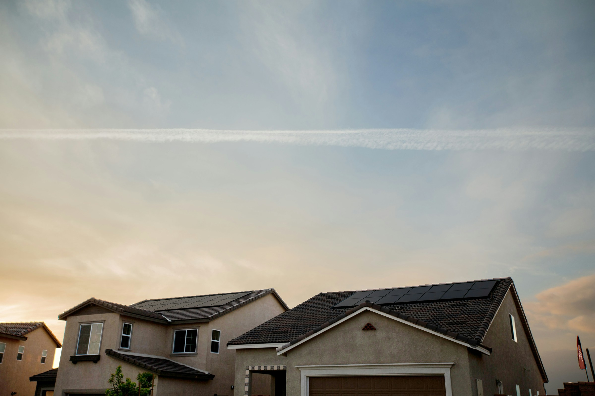
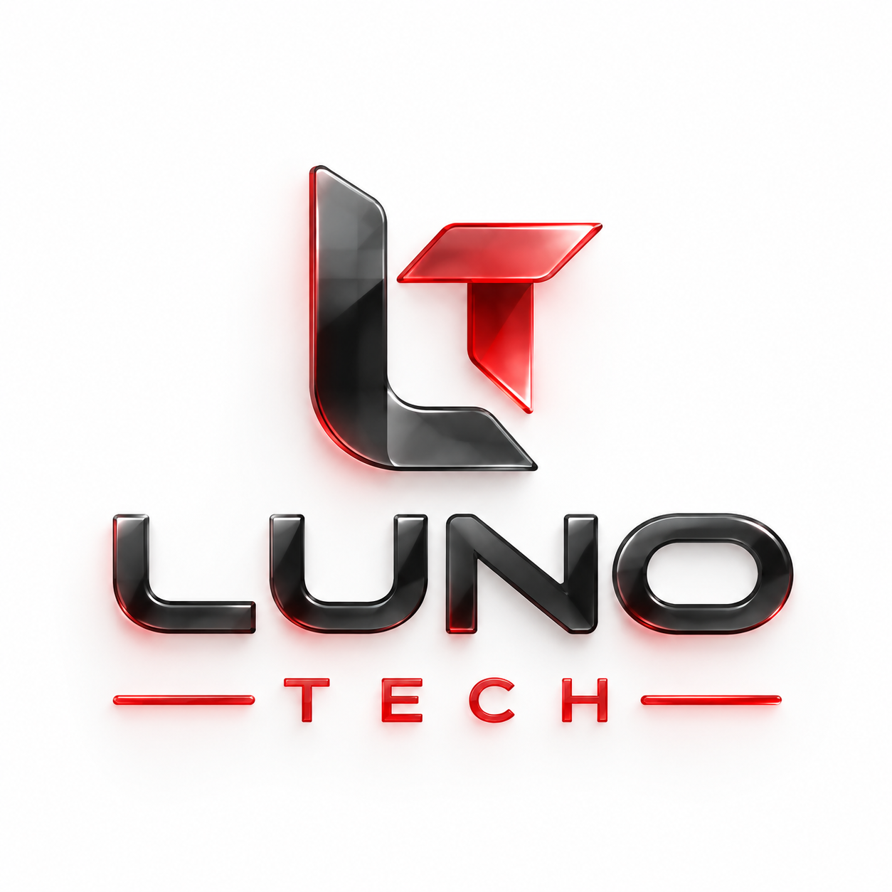

Uma marca reconhecível.
Cores, tipografia e conteúdo trabalhando juntos para apresentar quem você é.
DESENVOLVIMENTO DE SITES · LUNO TECH
Criamos sites profissionais e estratégicos para empresas. Em Curitiba, atendemos todo o Brasil on-line, com design personalizado para transmitir confiança e facilitar pedidos de orçamento.
Identidade própria. Experiência intuitiva. Em todas as telas.
Solara · exemplo demonstrativo de site.
PRESENÇA DIGITAL COM INTENÇÃO
Seu site costuma chegar antes de você. Ele precisa explicar o que sua empresa faz, refletir a sua identidade e tornar o contato simples.
Cores, tipografia e conteúdo trabalhando juntos para apresentar quem você é.
Informações bem organizadas para o visitante encontrar o que precisa, também no celular.
Chamadas e caminhos de contato que aproximam a sua empresa de quem tem interesse.
ANTES & DEPOIS
O novo site mostra o que torna a empresa diferente: proposta clara, benefícios em destaque e um caminho direto até o orçamento. Arraste e veja a diferença.
ENERGIA SOLAR
Seu projeto solar com orientação em cada etapa, da escolha do sistema ao acompanhamento após a instalação.
Solicitar meu orçamentoEntenda cada detalhe do seu investimento.
Etapas e prazos claros desde o início.
Suporte para continuar gerando energia.
Soluções em energia
para sua casa ou empresa.

O QUE PODEMOS CRIAR
Do primeiro site à reformulação de uma presença digital, nosso desenvolvimento de sites começa pelo seu negócio: o que você oferece, para quem e como facilitar o contato.
Um site planejado para o seu objetivo de negócio. Estrutura, conteúdo e chamadas trabalham juntos para apresentar sua oferta, responder às dúvidas do público e conduzir o visitante até o contato.
Uma apresentação completa da sua empresa, com serviços, informações e caminhos de contato organizados em uma experiência com a sua identidade.
Uma nova fase para o seu site: revisão do visual, da estrutura e da navegação, aproveitando o conteúdo que continua relevante.
Layouts que se adaptam a computadores, tablets e celulares, com textos legíveis, navegação simples e botões confortáveis de usar.
DA CONVERSA AO SITE
Entender, desenhar, desenvolver e revisar. Cada etapa ajuda a construir um site alinhado ao seu negócio.
Conhecemos a sua marca, seu público e o objetivo do site.
Organizamos conteúdo e visual para dar forma à experiência.
Transformamos o projeto em páginas adaptadas às diferentes telas.
Ajustamos os detalhes e preparamos a nova presença digital.
SEU PRÓXIMO PASSO
Conte o que você tem em mente. Um site estratégico, um site institucional ou uma transformação completa. Se preferir, preencha o formulário para enviar sua ideia pelo WhatsApp.
